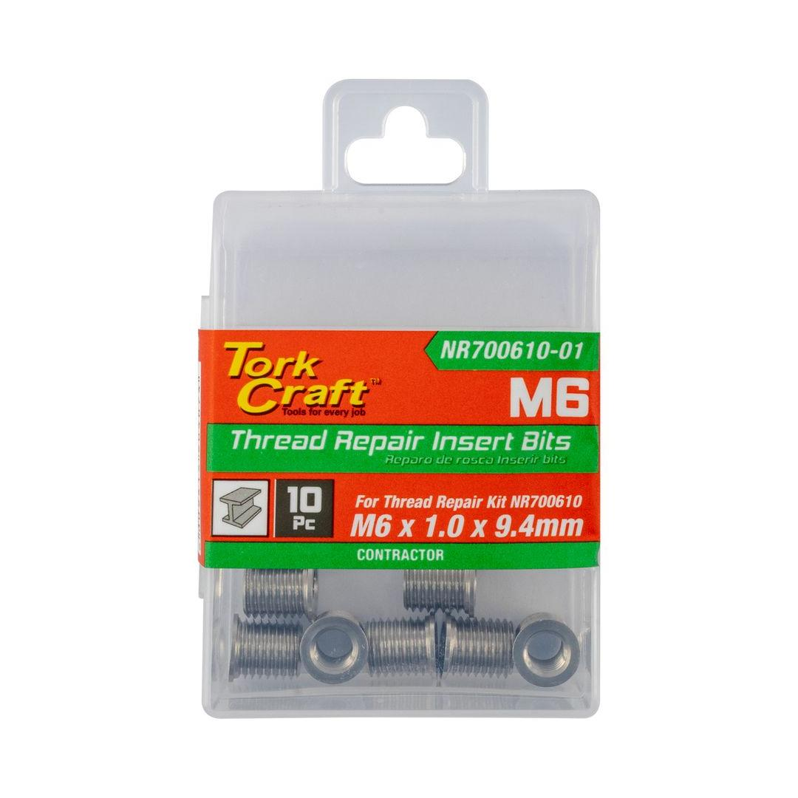

NR700610-01
295.55

Thread Size: M6 x 1.0mm
Length: 9.4mm
Classification: Standard (Yellow)
This package provides a crucial set of 10 high-performance M6 x 1.0 thread repair inserts. They integrate perfectly with the NR700610 repair kit. They are the professional solution for dealing with stripped, damaged, or worn-out threads.
Application: